Breweries
松本・塩尻・安曇野に点在する個性豊かな蔵元10社を厳選。
Products
クリックで購入ページへ。信州の旨みをそのままお届けします。
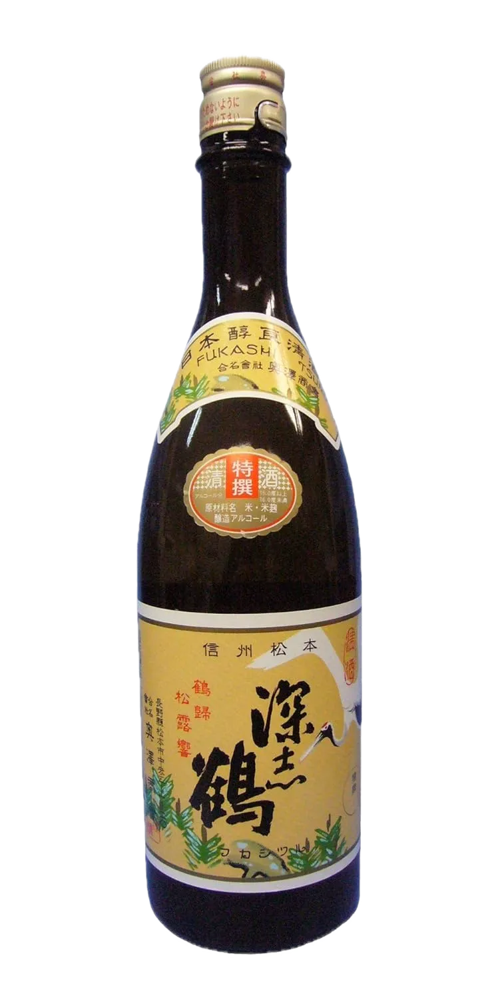
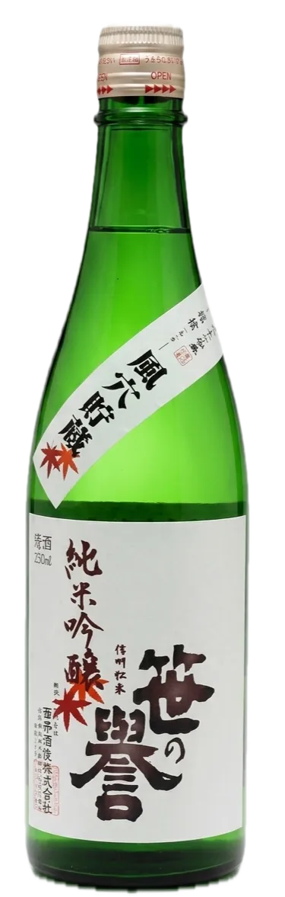
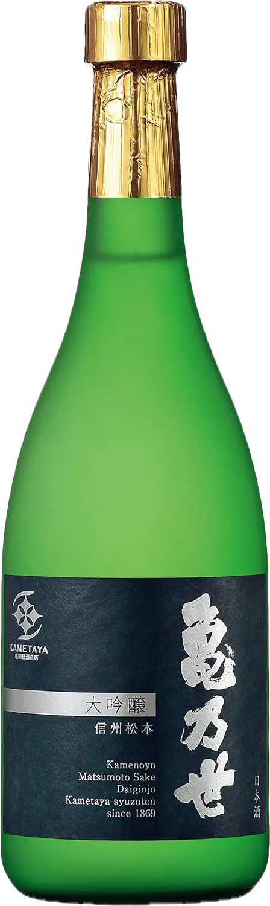
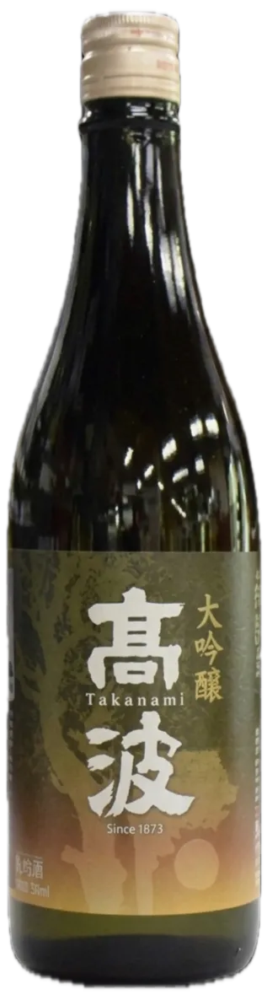
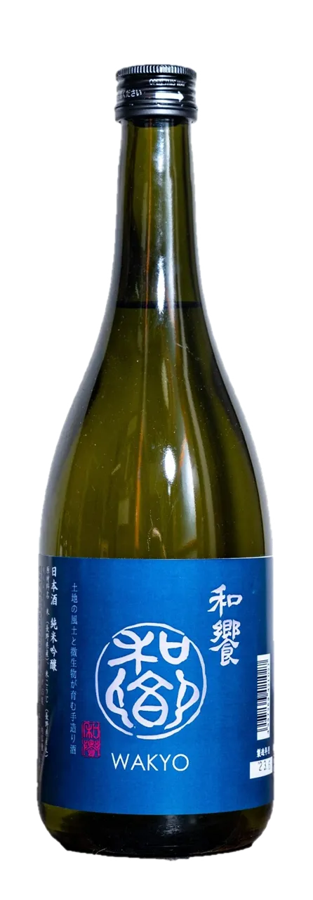
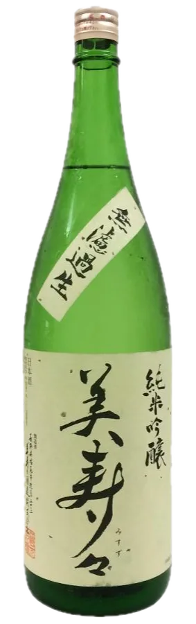
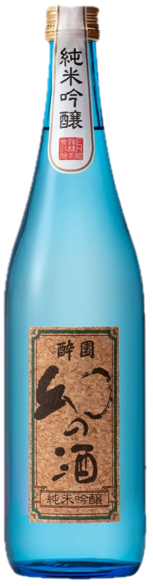
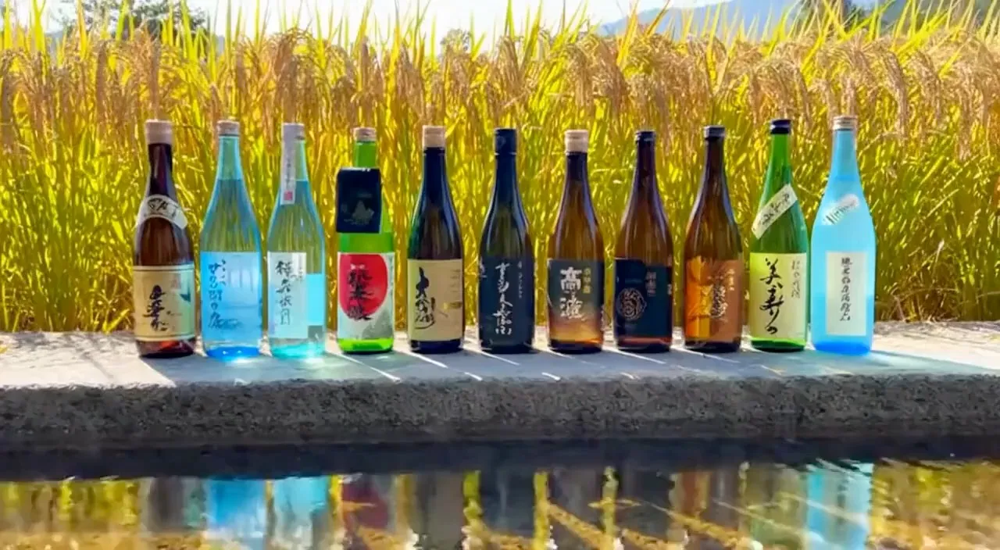
Event
松本地酒振興協同組合 主催イベント
地域を代表する銘柄が多数揃うほか、大好評のお惣菜やM's Factoryのスイーツも並びます。春の松本の風情を感じながら日本酒の魅力を心ゆくまで味わえるイベントです。
お問い合わせ・申込み松本平の地酒を味わう会
すっきりした中に味わいがあるバランスの良いお酒です。
おだやかな香りと、スッキリとした旨味の飲みやすい純米大吟醸です。
華やかな香り。柔らかでふくらみのある旨みときれいな味の純米吟醸。
バナナを思わせる芳醇な香りと味わいで、後味がスッキリとした純米酒です。
原酒ならではの深い味わいの生原酒です。
濃醇な味わいとキレが調和した食中酒です。
さわやかな風味で飲みやすい純米吟醸酒です。
秋田流花酵母AK-1を使用した新しい笹の誉。
搾りたてのさわやかな純米吟醸です。
甘くて飲みやすいどぶろくです。
飲酒適温15℃。金目鯛の煮つけ、黒豆クリームチーズに相性よし。
飲酒適温13℃。馬刺しや肉じゃがに相性よし。
飲酒適温15℃。揚げ物や生ハムによく合います。
スッキリとした辛口。優しい香りと口当たりは飲み飽きしません。
優しい香りと甘み、程よい酸味が特長の15％純米原酒。KuraMasterプラチナ賞。
「これぞ搾りたて！」と呼べるフレッシュ感溢れる生原酒です。
華やかな吟醸香で雑味が少なくきれいな甘味の大吟醸です。
やや控えめな吟醸香で柔らかい甘味の純米吟醸です。
しぼりたて原酒の香りと味わいを急速冷凍しました。
さわやかな口当たり。かつ豊かな米の味わいが楽しめる純米吟醸です。
バランスのとれた幅のある味わいの純米酒です。
濃醇で奥行きのある味わいの特別純米原酒です。
軽快でさわやかな香りでバランスのとれた旨味のお酒です。
日本三百名山「鉢盛山」の豊かな自然と清らかな水に育まれたさわやかなお酒です。
低アルで飲みやすいお酒。日本酒を初めて飲む方にお勧めです。
芳醇でキレのある味わいの純米吟醸です。
上品で穏やかな香り軽快な口当たり。手仕事で醸した純米大吟醸です。
新商品！白ワインを思わせるような純米吟醸です。
Research
品質向上のための研修・研究活動
日本酒は11月頃から翌年の3月頃にかけて製造します。出来上がった新酒を3月に持ち寄り、「酒質・出来栄え」等を関東信越国税局の鑑定官、長野県工業技術総合センターの研究員に審査していただきます。先生からいただいた講評などをもとに、全国や県の鑑評会へ出品します。
酒造が終了すると「澱引き」「濾過」をして生酒以外は「火入れ」をしタンクに低温貯蔵されます。タンクに金属製の呑み口をつけ少量の酒を採取することを「呑み切り」といいます。気温が上昇して酒質が変化しがちな6月〜7月にかけて貯蔵酒の保存状態や出荷について、関東信越国税局の鑑定官、長野県工業技術総合センターの研究員に審査していただきます。
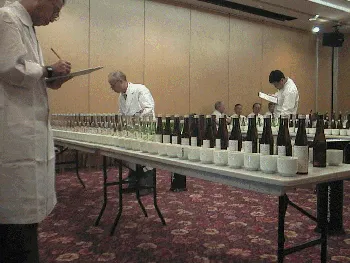
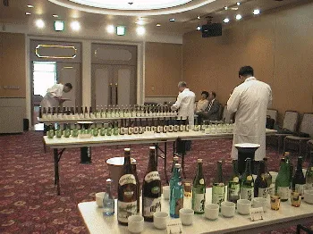
Shrine
松本市 深志神社境内
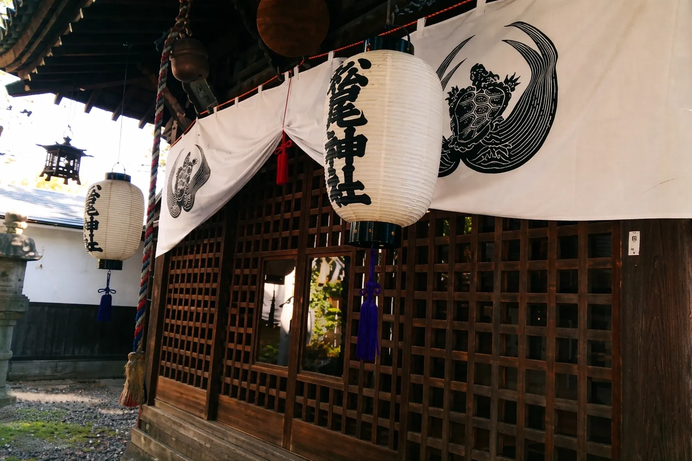
松尾神社は、大山咋神（おおやまくいのかみ）・市杵島姫命（いちきしまひめのみこと）を祭神に祀る、日本酒の神様として全国各地にある神社です。
江戸時代（1710年頃）、町ごと城下ごとの酒造仲間が、京都から松尾大社の分神を勧請して、それぞれに社を建て、それを拠りどころにして酒造の繁栄を祈っていました。
松本市の深志神社境内にある松尾神社は天保8年に奉られ、酒造りの季節が来ると毎年松尾神社の例祭を斎行し、酒造りの安全祈願を行っております。
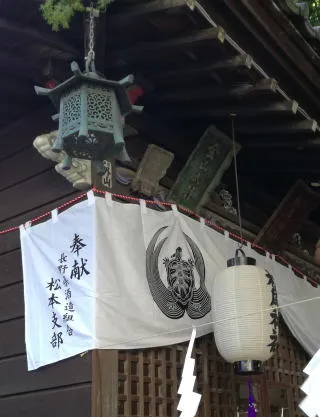
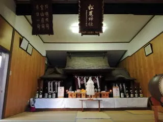